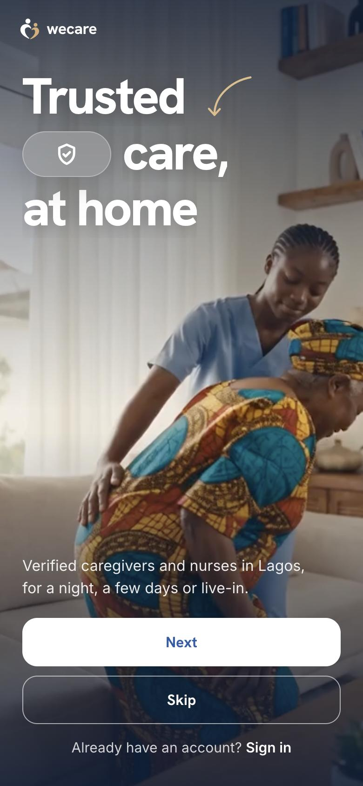
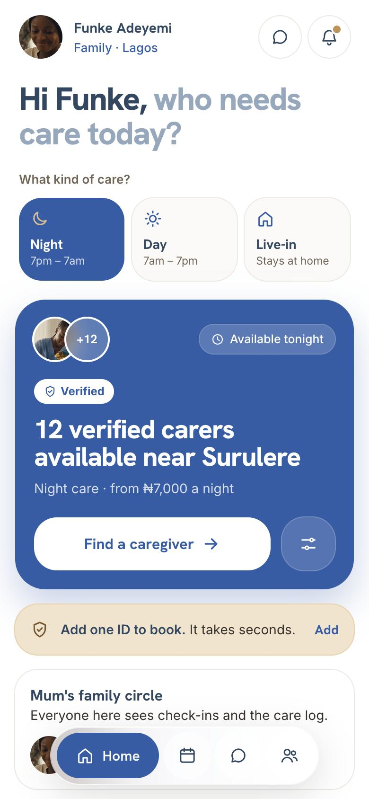
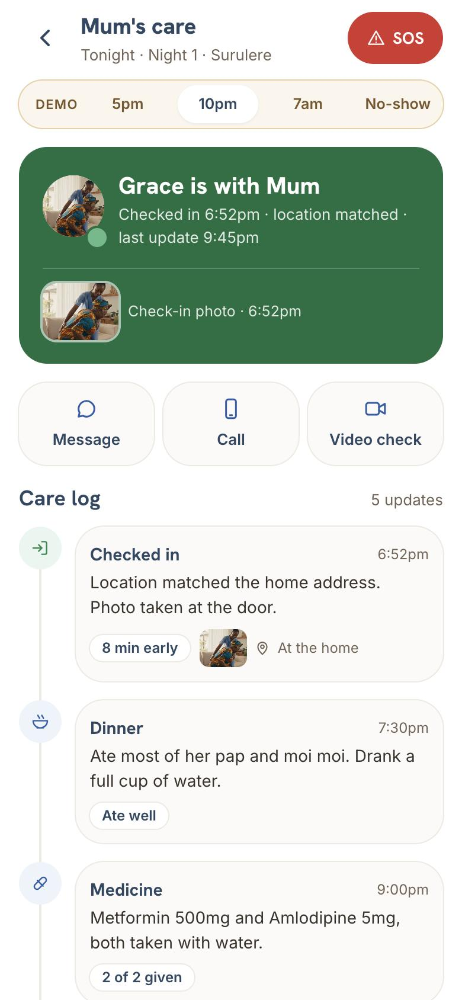
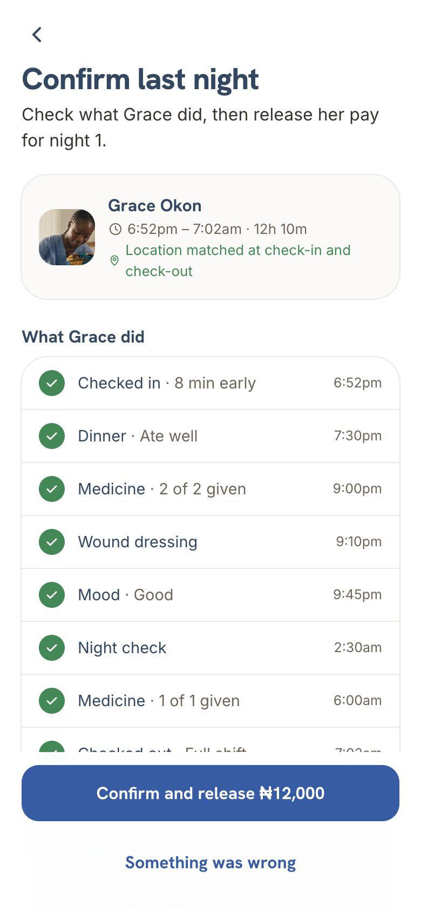

WeCare
When a parent comes home from hospital in Nigeria, families are left asking around for a carer they can trust. I’m designing the trusted way to find one.
- Company
- WeCare
- Role
- Product design · Founder
- Platforms
- Healthcare · Mobile
- Result
- A working prototype, built in real code.

When a parent comes home from hospital in Nigeria, families have no trusted way to find a qualified carer. They rely on word of mouth, can’t verify anyone, and often end up doing the caregiving themselves.
WeCare lets families book verified caregivers and nurses for a night, a few days or live-in, then follow every shift from wherever they are. It started with interviews about healthcare in Nigeria, including someone who had to find care workers herself after surgery.
One ID check, then a home that answers the first question: who can help tonight?


“Did they come? How is she?” Check-in photo, matched location and a live care log.

Payment is held until the family confirms the night. One tap releases it to the carer.

A working prototype, built in real code.
Next: testing with families and care workers in Lagos, then the caregiver app and admin tools.